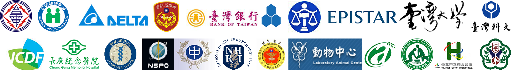

關於力多超音波有限公司
來自力多超音波有限公司公司 — 是一家專門製造各類清洗機的專業廠商
營業項目從機關團體專用
環保機型洗杯機、實驗室用小型清洗機、洗瓶機、超音波洗淨機、至研究動物中心、醫院供應中心、醫療用清洗機、大型隧道輸送式清洗設備、藥廠專用高潔淨清洗烘乾機、一應俱全...
自動控制生活變得更簡單
可微電腦監控及電腦連線、並有印表系統、資料掃瞄系統、洗籃自動辨識系統、 最多具有 60 組軟體程式設定功能設計、具備有錯誤自我偵測及診斷功能系統，可隨時掌控機器之功能狀況 歡迎洽詢...
遍佈全台的政府機構、研究單位、醫院、實驗室、大學，民間機關，皆選擇使用我們的產品。

營業項目Grids of images, videos, text, and more
-

-

藥廠用高潔淨清洗機
LEADER ® Pharma LD-650ub
無論在研究單位或工業領域，實驗室是所有發展的起源之處，錯誤會對結果產生很大的影響，品質管理及控制變因在實驗室領域裡，變得更加重要，經過30年經驗累積，鄭重推出此系列產品，除一般應用外，也能滿足所有高潔淨之特殊需求。
-

實驗室用洗瓶機
LEADER ® LD-450UB
實驗室器皿在清洗、消毒方面，需要絕對可靠的清洗機。即使是微量的殘餘物，在試管、血清瓶、培養皿、量瓶、量筒、燒杯、燒瓶、吸量管或酵素等項目，皆會對下一個實驗產生影響。本系列產品確保所有實驗室器皿獲得高等級之清洗，這是他牌無法勝任的特色。提供實驗室有效率、經濟和保護生態環境的處理，且符合人體工學的設計，便於操作及保養。
-

隧道式洗籠機
LEADER ® LD-1250UB
從研究動物中心、醫院供應中心 醫療用清洗機、大型隧道輸送式清洗設備、藥廠專用高潔淨清洗烘乾機、所需之大型隧道式輸送清洗設備，我們都有製造生產販售。